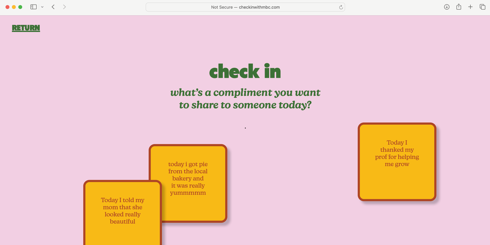
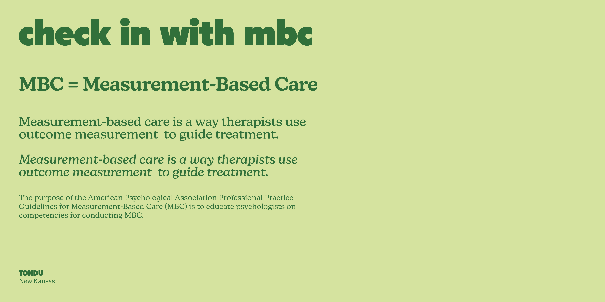
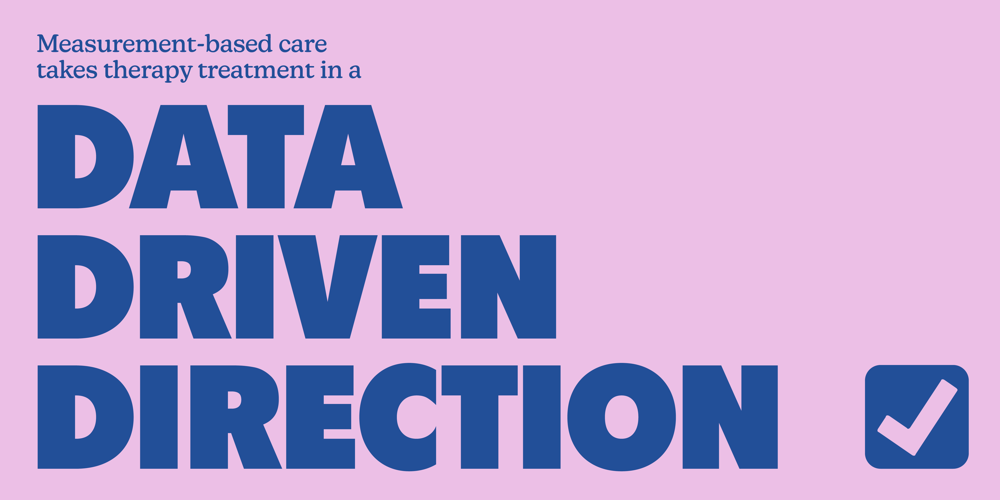
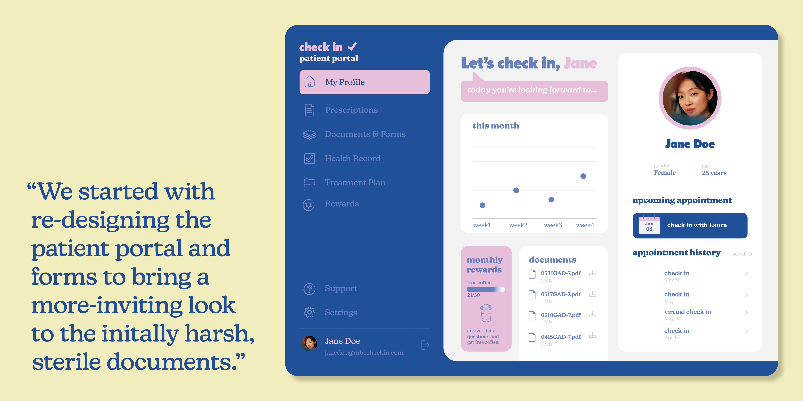
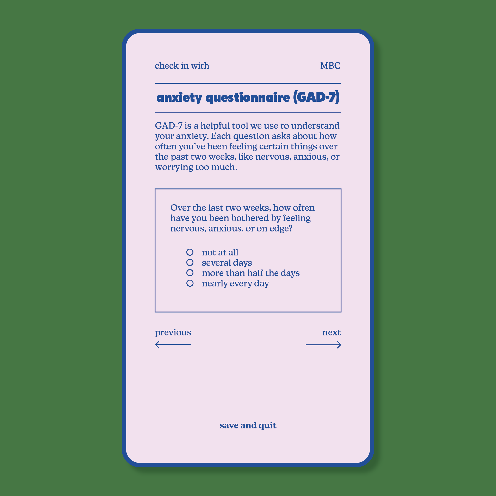
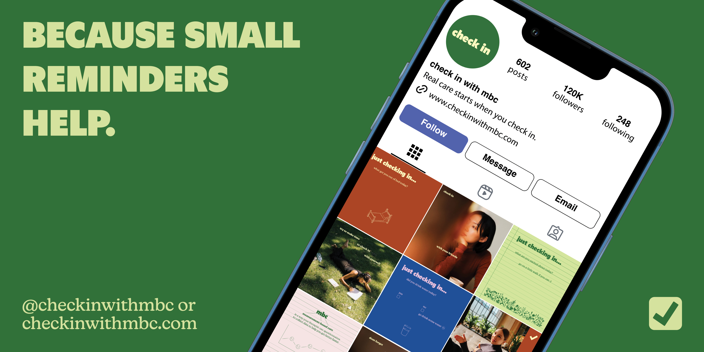

CHECK IN
a campaign promoting data-driven therapy
identity design | website design
client Ruben G. Martinez, PhD, and the American Psychological Association
collaborators Allie Heffner, Izana Nordhaus, Neat Rodanant
guided by Elizabeth Goodspeed and Kim Duck
Measurement-based care (MBC) is a clinical process where data is used to monitor patient progress and inform treatment planning during psychological intervention. Dr. Ruben Martinez, Assistant Professor of Psychiatry at Brown University, and RISD Graphic Design faculty Thomas Wedell and Jordan Gushwa presented this unique opportunity to collaborate with a research team at the American Psychological Association and develop a campaign that raised awareness about MBC.



Tracking and measuring data doesn't have to be a sterile process. To promote practicing measurement-based care, the feature of this campaign is a custom website with daily prompts for users to respond to and optionally share, creating a daily check-in question that feels exciting to answer.






Digital and printed versions of forms used during measurement-based care therapy were redesigned to be more accessible and approachable. While the daily check-in question draws in engagement, professional and private medical help is readily linked for those who want to start meeting with a therapist and moving forward with their MBC process.


Created for RISD Design Studio IV. Research based on the American Psychological Association Task Force on Professional Practice Guidelines on Measurement-Based Care .